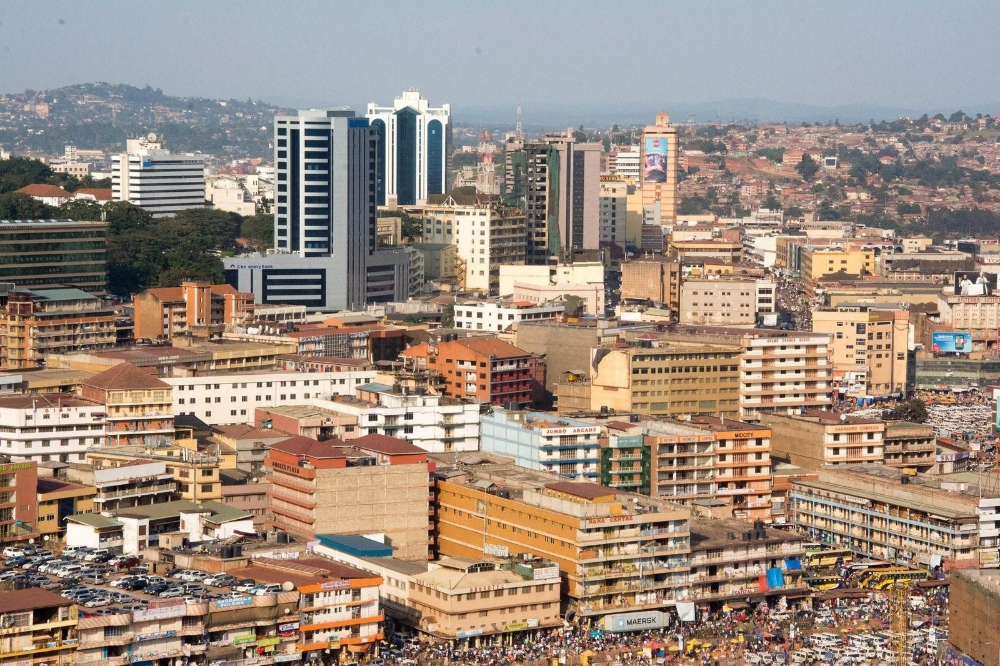

Kampala's central business district, where the hotel tax is charged on the occupied room. Photograph: Onyango George / EA Hospitality Pulse
Kampala taxes the night. Nairobi has started taxing the room.
One deletion in the Finance Act removed the VAT exemption on services used to build tourism, conference and recreational facilities, effective 1 July, in the same quarter the state expects to open a KSh 30 billion convention complex. Across the region the base of the tax is shifting from the night sold to the room owned, and that is the wrong direction for a market whose problem is empty months.
The building site at Lang'ata has been the most photographed piece of hospitality capital in East Africa for the better part of a year. "Construction of the Bomas International Convention Complex is progressing well," President William Ruto wrote on his official account while the project's April completion date was still standing. "The project is being delivered around the clock, employing up to 3,000 workers daily, to ensure it is completed by April 2026. It is designed to meet modern global conference standards."
The specification explains the enthusiasm. The complex is costed at KSh 30 billion and built for up to 11,000 delegates across 35 meeting rooms, with a 5,000-seat auditorium, a second hall seating 3,500, and a presidential pavilion sized for 30 heads of state. April came and went. On 20 April the Interior principal secretary, Raymond Omollo, confirmed a revised delivery date of September, and the Africa-France summit that was to have opened the building on 11 and 12 May moved to the Kenyatta International Convention Centre instead.
All of that is public money building public capacity, and it is the easy half of a conference strategy. The hard half is the privately financed hotel, ballroom and exhibition hall that has to open around a venue like that for the strategy to mean anything, and the terms on which those get built changed in the same quarter, in a document nobody in the sector was reading.
On 23 June, two months after the Bomas date slipped, the President assented to the Finance Act 2026. Section 32 of that Act amends the First Schedule to the Value Added Tax Act. Subparagraph (a)(iii) of it does one thing, in six words: it deletes paragraph 26.
Paragraph 26 of Part II of that schedule had been there since 2016, inserted by section 30(b)(iv) of Act No. 38 of that year. It read: "Taxable services for direct and exclusive use for the construction of tourism facilities, recreational parks of fifty acres or more, convention and conference facilities upon the recommendation by the Cabinet Secretary responsible for matters relating to recreational parks." From 1 July 2026, those services carry VAT at 16 per cent.
Whoever builds the conference capacity that Nairobi, Mombasa, Kampala and Kigali are all bidding for now pays the difference. The state's own complex does not.
The sector saw a version of this coming once and stopped it. In June 2025, when the previous Finance Bill proposed removing the parallel exemptions for goods used in tourism construction and for locally assembled tourist vehicles, the Tourism principal secretary, John Ololtuaa, put the ministry's case to parliament in public. Retaining the exemptions, he argued, would protect Kenya's competitiveness against regional rivals and the quality standards that bring guests back. "This measure will ensure the sustained growth of a resilient, competitive, and inclusive tourism sector in Kenya," he said.
A year later the services limb went with no comparable noise: no ministerial memorandum reported, no association statement, no delegation. Services, in a building of this kind, is not a marginal category. It is the architect, the structural and services engineers, the quantity surveyor, the project manager and the professional element of what the main contractor bills, which together account for a substantial share of the cost of putting up a hotel or a conference hall before a single bag of cement is argued about. All of it now carries 16 per cent that it did not carry in June. What the 2026 Act does to the goods limb is a question for a tax adviser rather than a newspaper. The services limb is not ambiguous. It is deleted.
It would be easy to file this as one more line item, and that would miss what is happening across the region. There are three places a government can put its hand into a hotel, and they behave completely differently in a bad year.
Kampala taxes the night. The Local Hotel Tax, levied under the Local Government (Amendment) (No. 2) Act 2008 and the Kampala Capital City Act 2010, is collected by hotels for the Kampala Capital City Authority at US$2 per room per night for four and five star properties, UGX 2,000 for three star and anything above UGX 50,000, and less below that. It is assessed on room occupants, so the liability arrives with the guest and does not arrive in a month without guests.
Edinburgh taxes the bill. On 24 July 2026 the first city-wide visitor levy in the United Kingdom came into force there at 5 per cent of the accommodation charge, capped at five consecutive nights, with the same rate every day of the year. The council expects roughly £50 million a year and has committed more than £90 million over three years across city operations, culture and heritage, and destination management. "This small new contribution from overnight visitors will help improve the services and public spaces we all depend on, while better managing the effects of tourism and major events," said Jane Meagher, the council leader. Julie Ashworth, who chairs the city's visitor levy advisory forum, framed it as insurance rather than extraction: "The levy can help Edinburgh stay welcoming, resilient and successful."
A percentage of the bill is a partner in a bad season. It falls when rates fall, disappears when the room is empty, and because the guest sees it on the folio, the city has to say what it bought.
Nairobi has chosen the third base. The Nairobi City County Finance Act 2026, assented on 4 August, carries a schedule titled Tourism Levy and Entertainment Tax. On the reading published by Kenyan Wall Street on 25 August, it charges hotels KSh 2,000 per room a year, guesthouses KSh 1,000 per room, serviced apartments and short-stay units KSh 1,500 per unit, event grounds KSh 80,000, and takes 5 per cent of concert and professional sports ticket sales.
The honest thing to say about those numbers is that they are small. KSh 2,000 a room is about fifteen dollars a year, so a hundred-room hotel is looking at KSh 200,000, less than the KSh 250,000 the national classification regime charges a single enterprise to be graded. Nobody closes over this.
The base is the problem, not the rate. A charge on the room is owed in the thin weeks of May exactly as it is owed in the full weeks of August, and it is owed by the owner of a wing that has been shut since the long rains. It is a charge on having built, not on having sold. Once that base is established in a county schedule it is available to be raised in any later finance bill, by a county whose revenue pressure will not reduce.
One caution on the figures. The county has not published the 2026 Act, its online Finance Act series stopping at 2023, and the secondary readings disagree on the nightlife bands. The accommodation charges above rest on one outlet, so any operator budgeting against them should read the gazetted schedule, and the county should publish it.
What happened next in Nairobi is the part the industry should study. Within weeks, the film and content constituency made enough noise to earn a clarification from the governor. "These charges were never intended to target ordinary content creators, influencers or young people creating digital content," Johnson Sakaja said on 24 August, distinguishing a phone video from "a large film production arriving with a crew, equipment, vehicles and requiring the temporary closure or controlled use of a road." He added: "We will not introduce measures that stifle that creativity."
No equivalent clarification was issued about accommodation, because no equivalent noise was made about it. Stephen Osedo, head of policy, research and advocacy at the Kenya National Chamber of Commerce and Industry, described the pattern. "Every so often we see tax amendment bills or counties reviewing their legislation around fiscal policy," he said. "You wake up, and there is a new levy or fee that has been introduced."
Set against all of that, the national government is at the same time doing the design well. The Tourism Amendment Bill before parliament keeps the levy on hospitality at 2 per cent of revenue from regulated hotels and restaurants, and rebuilds its collection. "We therefore need to amend and modernise the law so that it reflects the realities of the sector today, responds to emerging opportunities and provides a stronger foundation for its future growth," the Tourism cabinet secretary, Rebecca Miano, told the committee. The principal secretary, Julius Bitok, described the plumbing: "We are borrowing the approach underpinned by the Public Finance Management Act where KRA collects money through e-Citizen and deposits the funds with CBK for allocation through the Treasury."
Most useful of all, the committee chair, Kareke Mbiuki, pressed the ministry to broaden the base "beyond the current hospitality industry to include Airbnb and other facilities," and insisted on an "extensive public participation exercise to capture broad consensus." A revenue-based levy, audited through a proper collection chain, extended to the short-stay stock that competes with licensed rooms and has largely not paid it: that is the reform licensed hoteliers have asked for repeatedly, and it is open for submissions now.
Why this matters more in East Africa than it would in a mature market is a question of what is arriving. The 2026 Hotel Chain Development Pipelines in Africa report from W Hospitality Group, published on 10 March, counted 123,846 rooms across 675 hotels and resorts on the continent, up 18.6 per cent. Kenya holds 6,190 of those rooms across 35 properties, and 4,922 are already under construction. Tanzania has 3,222 of 4,159 in the ground. That capacity opens whether or not the demand turns up, into a market whose weakness has never been the peak weeks but the shoulder months on either side of them.
A tax on the room and a tax on the building both raise the occupancy a property must achieve before it earns anything. A tax on the night does not. When the binding constraint is empty months, moving the base from the stay to the asset lands the charge precisely where there is no revenue to pay it from.
The counties have a real answer to this, and it deserves stating. Own-source revenue is thin, a room count can be audited once a year against a register while occupancy in a partly cash market cannot, and a percentage levy needs a collection chain of the sort the Tourism Amendment Bill is still trying to build. Fixed fees are the instrument available to an administration that cannot yet verify turnover. The sequencing is intelligible. The cost of it is charged to the capacity that the same state is spending KSh 30 billion to attract business for.
Three things follow for anyone running or building rooms in Kenya this quarter. Re-quote 2027 capital projects with professional services at 16 per cent, separated on the invoice so the exposure is visible. Make a submission while the Tourism Amendment Bill is in public participation, and make it about the base rather than the rate: the bill, not the room. And add up every county line item into one annual figure per available room, then put it in front of the county assembly in April, because a schedule argued in August is a schedule already passed.
The complex at Lang'ata will open with the state's name above the door. The rooms that have to fill it will be built at sixteen per cent more, by people who were not in the room when paragraph 26 was deleted.
📣 Telegram 💬 WhatsApp 💼 LinkedIn 📚 All guides